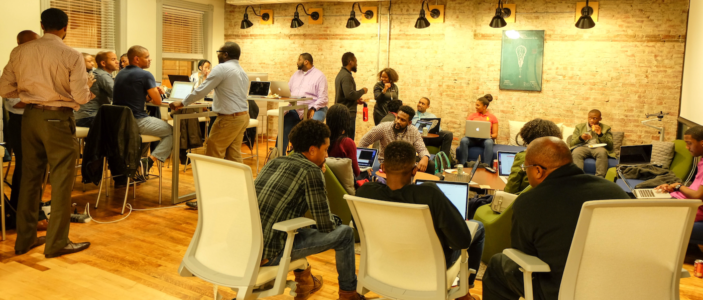
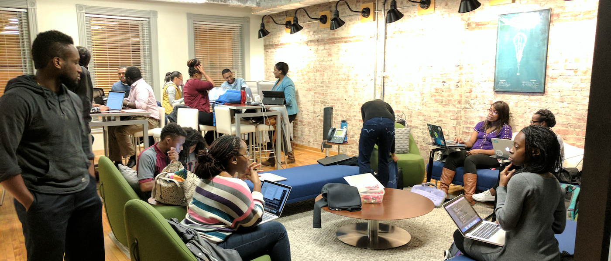

<section class="">
    <a name="index"></a>
    <div class="slides">
        <h1 class="title lght"> <span class="strng">Black</span>CodeCollective</h1>        
        
        
        
    </div>
</section>
<section class="sml">    
    
</section>
<script>
    var slideIndex = 0;
    carousel();

    function carousel() {
        var i;
        var x = document.getElementsByClassName("slide");
        for (i = 0; i < x.length; i++) {
        x[i].style.display = "none"; 
        }
        slideIndex++;
        if (slideIndex > x.length) {slideIndex = 1} 
        x[slideIndex-1].style.display = "block"; 
        setTimeout(carousel, 2000); // Change image every 2 seconds
    }
</script>